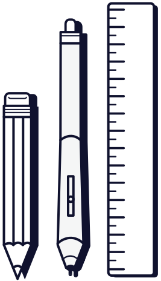

A Bit About Me
I'm a London based designer & front-end developer working at the digital agency pebble {code}.
Ian Thomas Black
Designer & Front-End Developer
Education
Sheffield School Of Architecture
2006 - 2010
Architecture BA(Hons) : Upper 2nd Class
Eltham College
1999 - 2006
3 A grade A-levels
1 A grade AS-level
11 A* to B grade GCSEs
Work Experience
Current
–
Jan 2015
UI/UX Designer : pebble {code}
- Design and front-end development of web applications for large Enterprise clients, using Agile methods.
- Working closely with a team of designers and developers.
- Managing key client projects, throughout the process of product thinking, design, development and delivery.
- Engaging teams in workshops to develop ideas.
- Hacking, to build rapid prototypes for testing.
- Perform user research & testing.
- Developing company culture, including art classes, career development processes and blogging.
- Interviewing Designer role candidates.
Jan 2015
–
Jul 2014
Digital Designer : Cancer Research UK
- Data-driven graphic and interactive designs at the world’s largest independent cancer research charity.
- Designing for a range of audiences, from politicians to scientists.
- Published graphics on their award winning blog and the BBC’s international news website.
Jul 2014
–
Jan 2012
Graphic Designer : Harrison:Fraser
- Defining and building international brands for this strategic design consultancy.
- Print, digital and interior design for Retail & Leisure brands.
- Working with brand planners, clients and suppliers to build engaging brand experiences.
Oct 2012
–
Oct 2011
Exhibition Researcher : Viewfinder Photography Gallery
- Part-time volunteer position for this London based gallery.
- Researching and writing web content on the latest photographic industry news, events and exhibitions.
Key Skills
